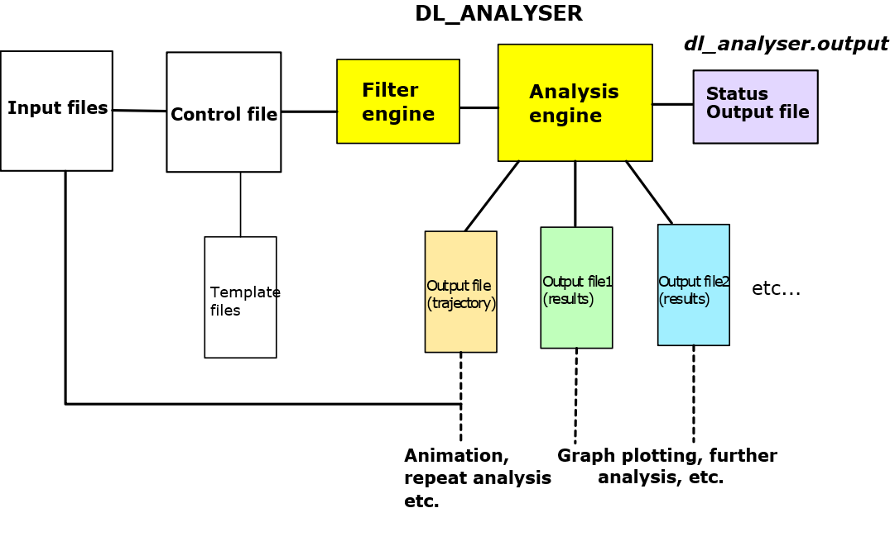

Structures and Operations¶
This page illustrates the software structural aspects and provide brief summary how it works.
If you need a quick summary how to setup and run DL_ANALYSER, go to this page: Ready, get set, go - how to compile and run DL_ANALYSER.

File structures
DL_ANALYSER program suite comes with the following file componnents:
- DL_ANALYSER program source files, in the source/ folder.
- DL_ANALYSER control file, by default, in the workspace/ folder.
- DL_ANALYSER input file, by default, in the workspace/ folder.
- Atom list files, atom_list_A and atom_list_B. Two special files that list explicitly atoms to be included in analysis.
- The dl_a_path file, that specifies the directory paths of control and input files relative to DL_ANALYSER home directory. The home directory is the directory path where the DL_ANALYSER executable file, dl_analyser.exe, is located. The dl_a_path and dl_field.exe must always locate in the same directory path.
- The run_dla file. This is a simple script file, that when run, will execute the dl_analyser.exe file. The number of threads can also be specified for the OpenMP parallel run.
Operations
Diagram below shows schematically how DL_ANALYSER runs.
{kind=link}
Firstly, you would need to supply input configuration files, such as the HISTORY files, specified in the DL_ANALYSER input file. The latter is a text file that describes the total number of configuration files to analyse, follows by list of configuration files. Example below shows a typical input file.
3
../md_run/model/HISTORY1
../md_run/model/HISTORY2
../md_run/model/HISTORY3.gz
Comment can put here, which will be ignored.
This is because DL_ANALYSER only reads the first
three lines, as specified above.
Besides the HISTORY file, DL_ANALYSER can also recognise other file formats such as the PDB, xyz, and DL_POLY CONFIG files. DL_ANALYSER can also read and extract data produced by the DL_POLY STATIS file. In addition, DL_ANALYSER can also read files that are compressed, such as those that are produced by using the gzip (as shown above).
| TIP: | In order to produce a contiguous and sensible results, it is highly recommend the listed trajectory files were from the same molecular system and they are listed in the correct sequence. |
|---|
Program execution
To run dl_analyser just type
./dl_analyser
This will run the program and use the default number of threads that are available in the computer for the OpenMP parallel executions. Alternatively, you can explicitly specify the number of threads needed in the given script, called run_dla to run DL_ANALYSER:
./run_dla
The steps below show what happens when the program is run:
- Read dl_a_path.
- Read DL_ANALYSER control file.
- Read files specified in the DL_ANALYSER input file.
- Select and compile groups of atoms according to the options specified in the control file, to which analysis will be carried out.
- Select analysis modules according to the options specified in the control file and carry out analysis calculations.
- Produce results in output files specified in the control file.
Note
In most cases, results would still need to extract from the output files for further processing. For instance, for graph plottings, and graphical display illustrations.